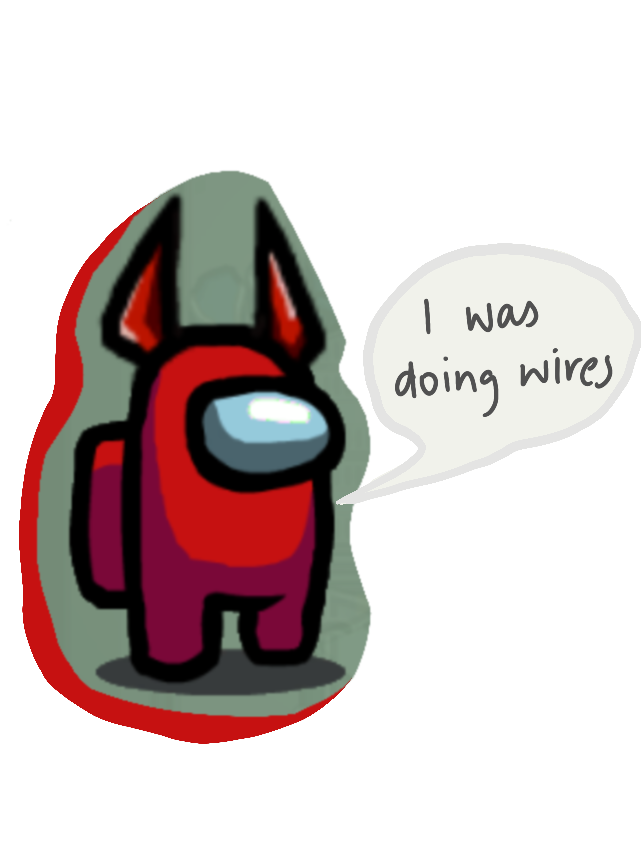
Red
- Red is the single most sus crewmate in every game. They are the face of Among Us, and add a pair of devil horns, people are sus. That being said, Red is one of the most experienced crewmates in space. The crew often asks Red for guidance in completing tasks, as well as flying under the radar as an imposter.
| 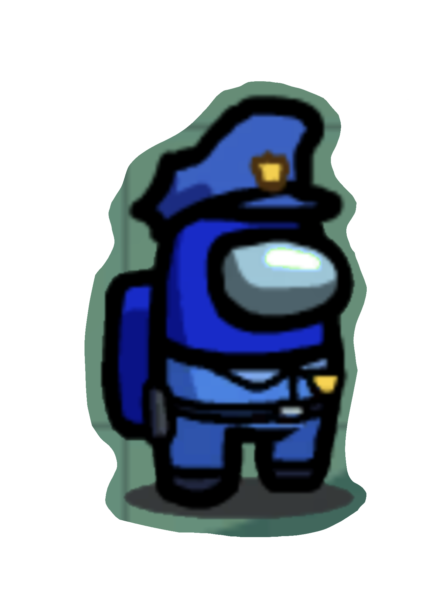
Blue
- Blue is an ally for Red and another experienced player. Blue was stolen from Earth over 200 years ago and has never looked back. They are incredibly efficient at tasks and as sabotaging as an imposter, being a true neutral player. Blue is often quiet on comms, but there for support when needed.
| 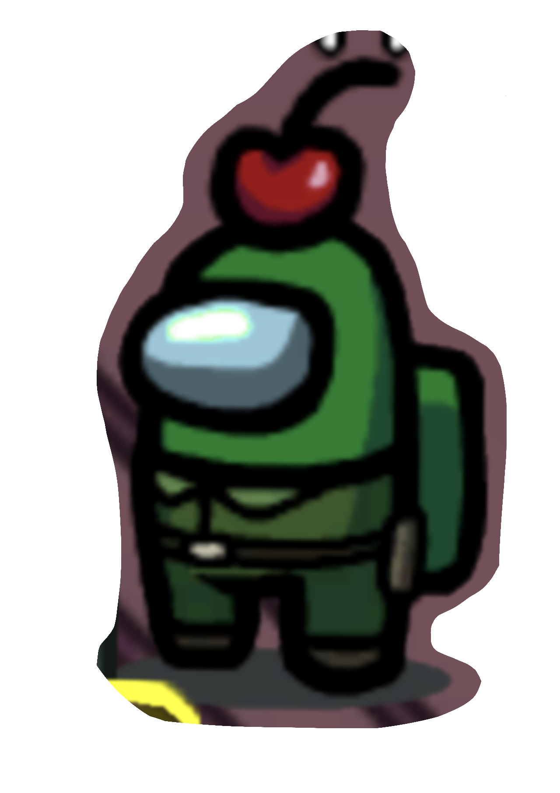
Green
- Green is the dead weight in the crew. They are garbage as imposter, garbage as a crewmate, garbage overall. They are the first to be ejected and land on new ships. Dark Green is terrible at lying and instilling trust in others.
|
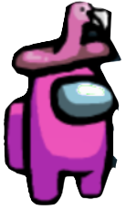
Pink
- Pink is a ferocious crewmate and imposter. He is ruthless and uses gender stereotypes to his advantage as an imposter. He loves doing medbay scan alone because he is an adrenaline junkie. Pink is not loyal to anyone but Lime as he has been in love with Lime since he got on the ship.
| 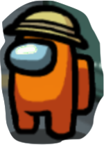
Orange
- Orange was adopted when she was seven years old and has never returned home. She learned the ropes under Yellow’s guidance, and has become the most efficient crewmate at tasks. Orange often flies under the radar, and is unlikely to be caught when imposter.
| 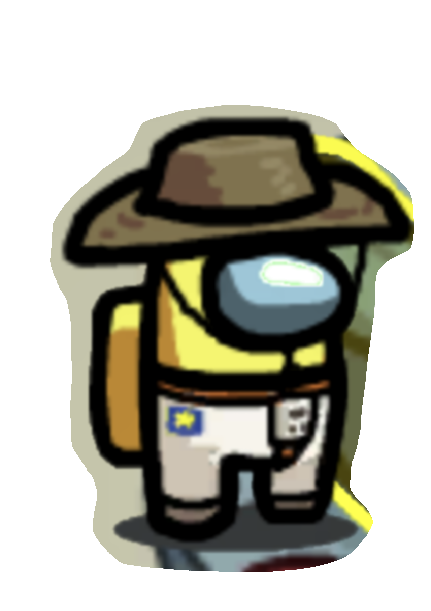
Yellow
- Yellow is the old wise soul of the crew. As imposter yellow doesn’t kill, she sabotages. She protects Orange with her life and has a parental bond with her. She tries to train Purple in her spare time when she is not directing the ship. Everyone respects Yellow and avoids killing her, because Orange and Purple would spiral without her.
|
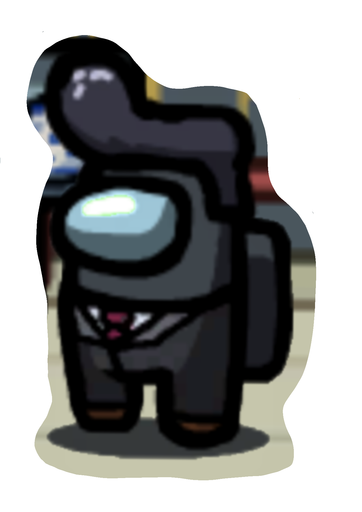
Black
- Black uses her suspicious nature to her advantage and completes her tasks quickly, in order to monitor the cams. She stays quiet in the chat, but is quick to accuse others if she gets targeted. Black is able to hide in the shadows and mess with people while they are completing tasks.
| 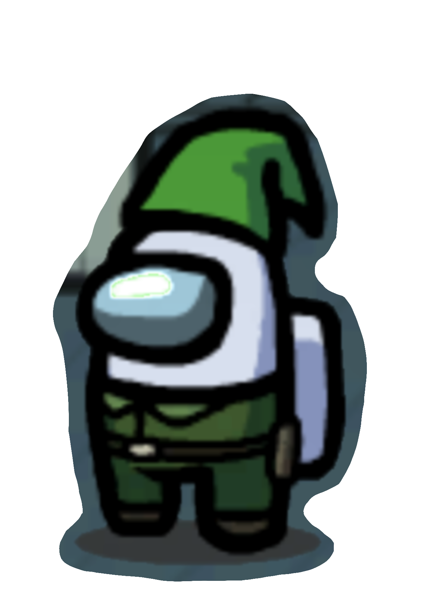
White
- White uses their angelic demeanour to his advantage, making him an expert at conning the crew. White is able to blend into the maps well, and is extremely articulate on the comms. White often likes to pair up with an ally, but is open to all crewmates.
| 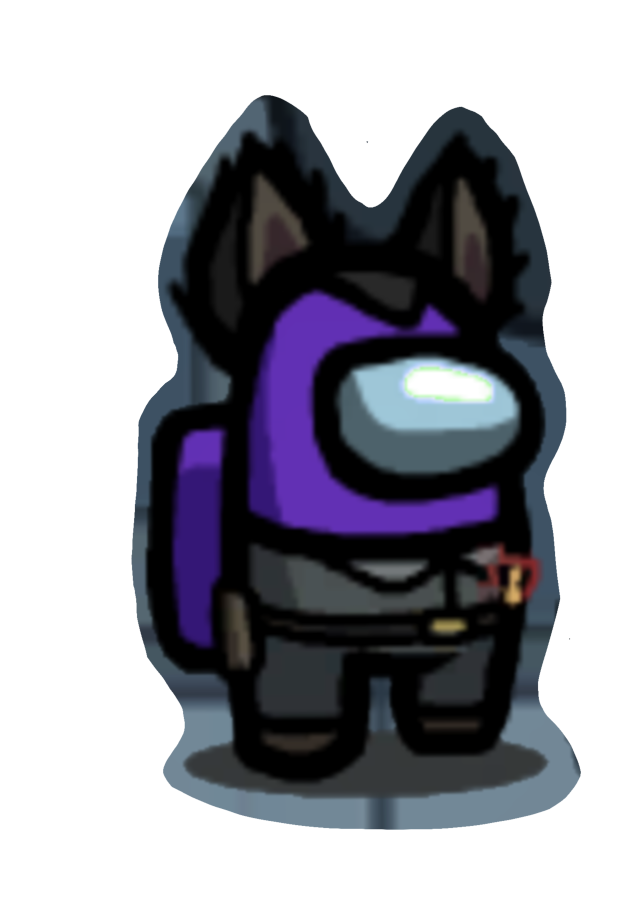
Purple
- Purple is the most recent recruit on the crew. He came on just a short 2 months ago and has been making his way through the tasks. Purple struggles with long tasks, but is known for being honest. Purple sticks close with Orange and Yellow, and will always verify visual tasks.
|
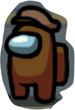
Brown
- Purple is the most recent recruit on the crew. He came on just a short 2 months ago and has been making his way through the tasks. Purple struggles with long tasks, but is known for being honest. Purple sticks close with Orange and Yellow, and will always verify visual tasks.
| 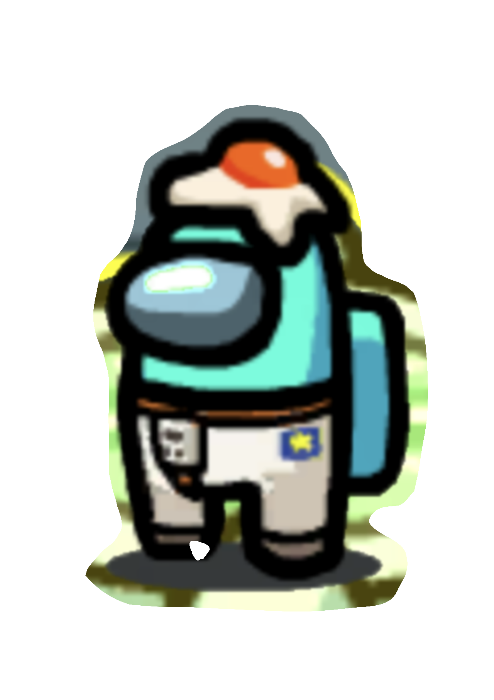
Cyan
- Cyan is the audacious, talented recruit. Found on Saturn, Red decided to take a chance on this shade of blue and invest in their talents. It’s been 40 years since Red recruited Cyan and since then they have grown apart, but Cyan provides quick kills and tangible advice to the crew.
| 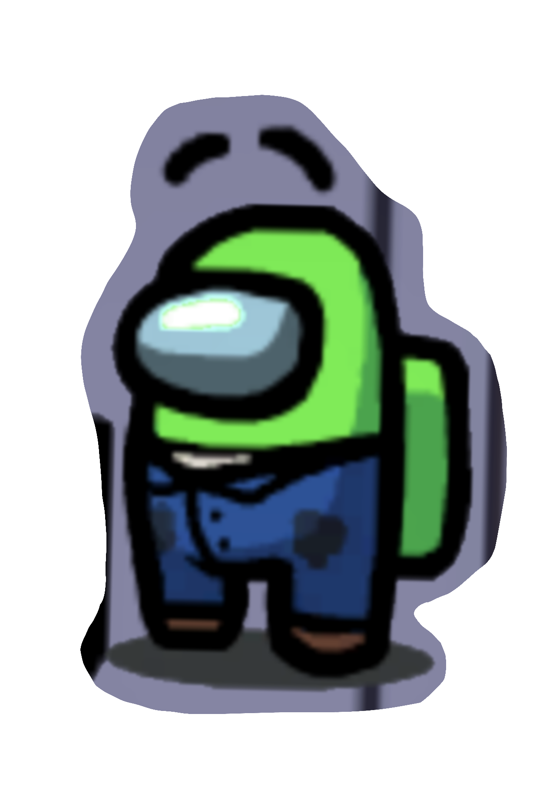
Lime
- Lime is a cool, calm crewmate and strategic imposter. He is aware of Pink’s romantic interest and is not sure how he feels about it, and instead focuses his attention on the safety of the crew, or eliminating the crew. Lime always wears a cowboy hat to maintain a calm demeanour, and try to hide his colour when imposter.
|